Fleeting States + Measured Values
COLLABORATORS: Aikaterini Sideri, Jana Hartmann, Prakhar Mittal, Mika Arai
PROJECT ROLE: UI Developer, Researcher, Creative Technologist
TOOLKIT: TouchDesigner, Physical Computing, Figma, HTML/CSS, JavaScript, Python, Render
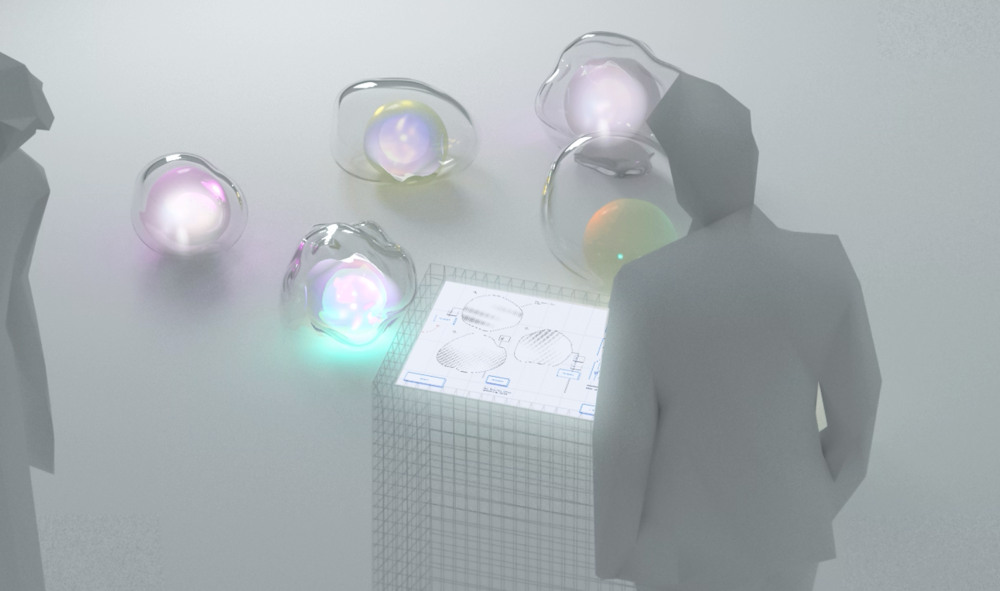
Quantum Physics
LED Mapping
Interactive Installation
Design Problem
How can we make invisible quantum phenomena —like the Bloch sphere, superposition, and entanglement—accessible to human senses through physical, interactive experiences while giving the audience a deeper understanding of quantum concepts?
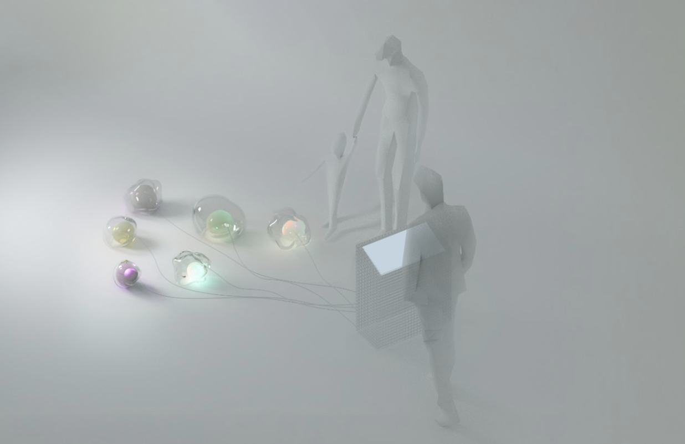
Overview
Fleeting States + Measured Values divides one installation into two worlds to explain quantum computing. One world captures the ambiguous and uncertain nature of “before measurement” while the other world presents the clear and precise numbers we recognise as results.
Quantum behaviour often occurs at scales that are not visible to the naked eye, so our project employs interactive light and sound experiences to allow participants to physically sense superposition and entanglement, rather than just understanding them theoretically.
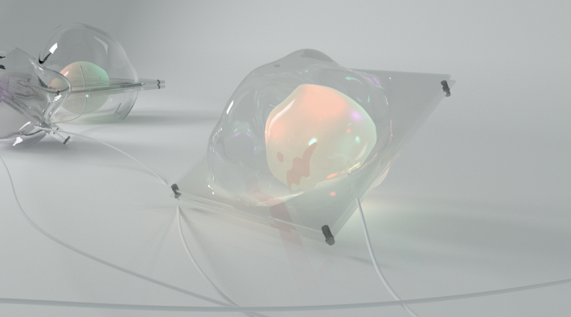
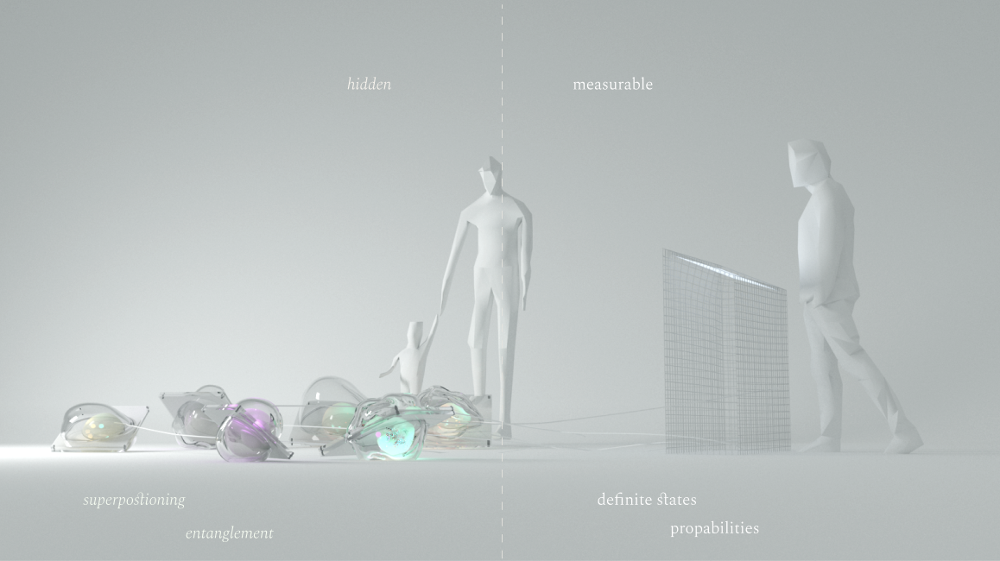
How It Works
The project has two components: a touchscreen interface and LED-mapped qubits. In the fleeting states world, qubits respond to user interactions through changes in light and sound.
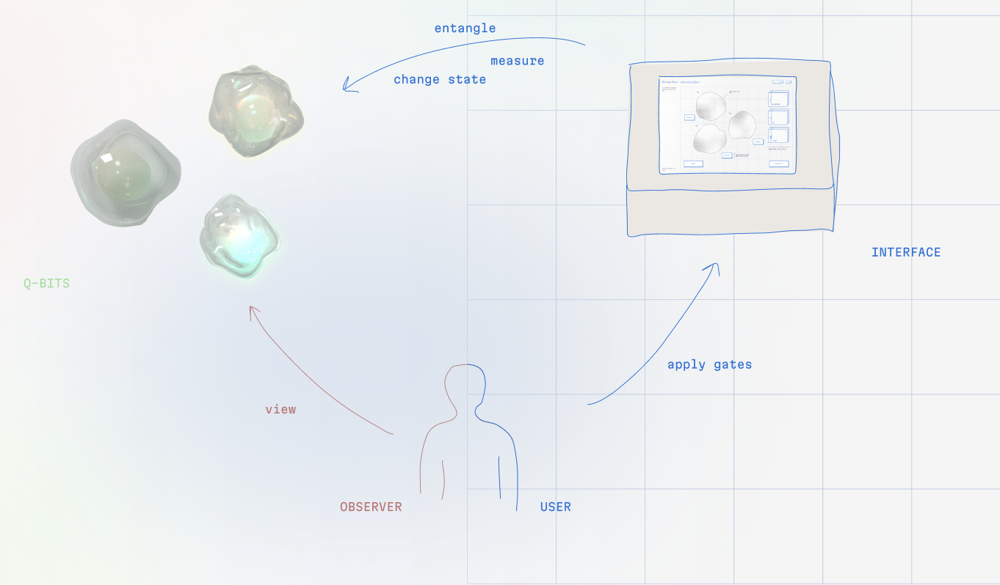
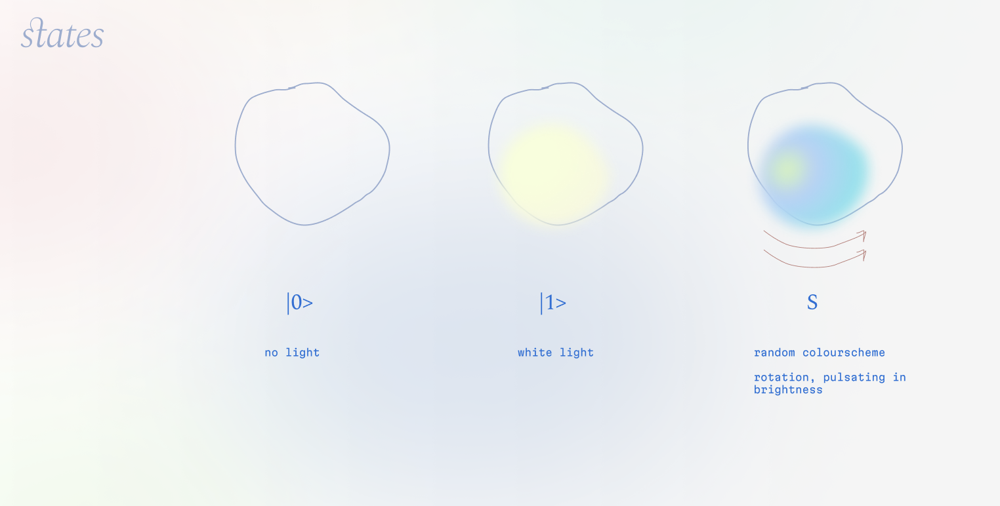
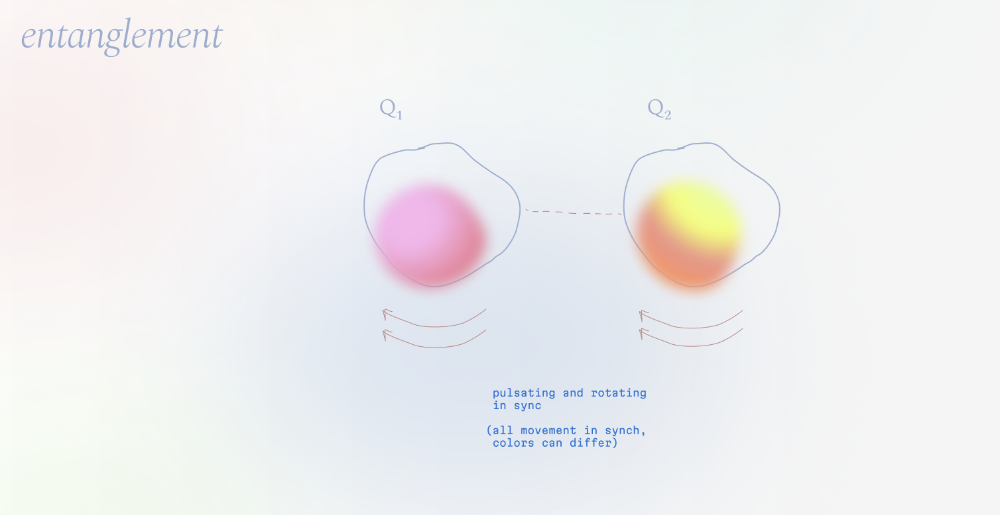
In the measured values world, you drag quantum gates onto individual qubits to change their states. Each gate is a small, repeatable operation on the basic unit of quantum information (a qubit). You can try familiar gates such as Hadamard, Rotation, and CNOT, then read short notes on what each gate changed.
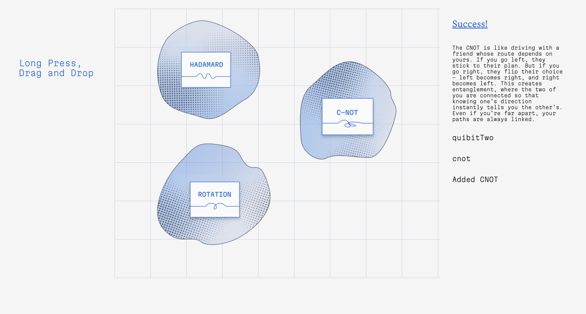
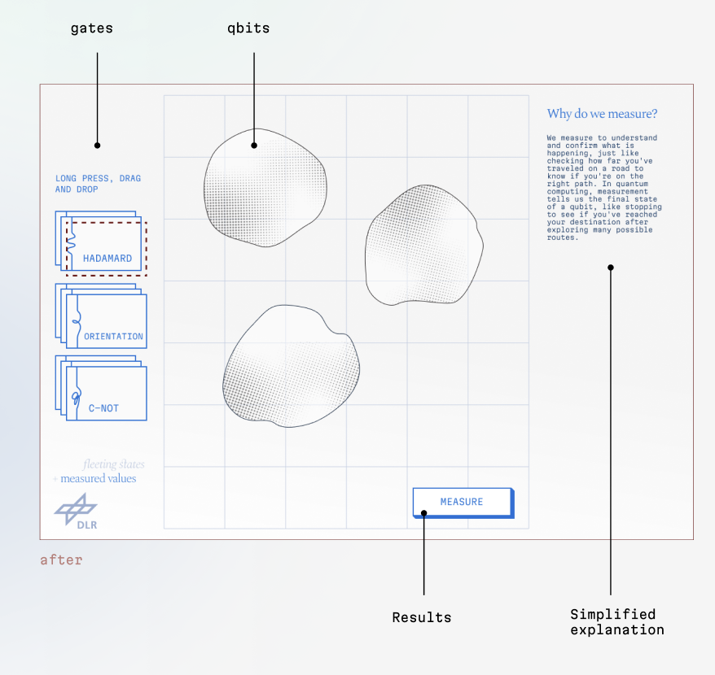
These changes appear immediately in the fleeting states world as shifts in color, intensity, and light movement. In the measured values world, changes appear only as statistical probabilities after measurement, revealing classical probability values. By exploring the interface and interacting with the physical installation in real time, users playfully gain insights into quantum principles.
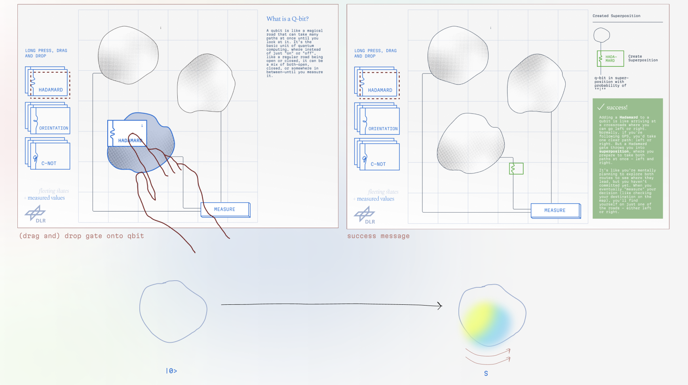

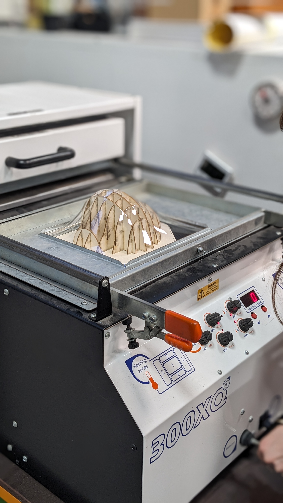

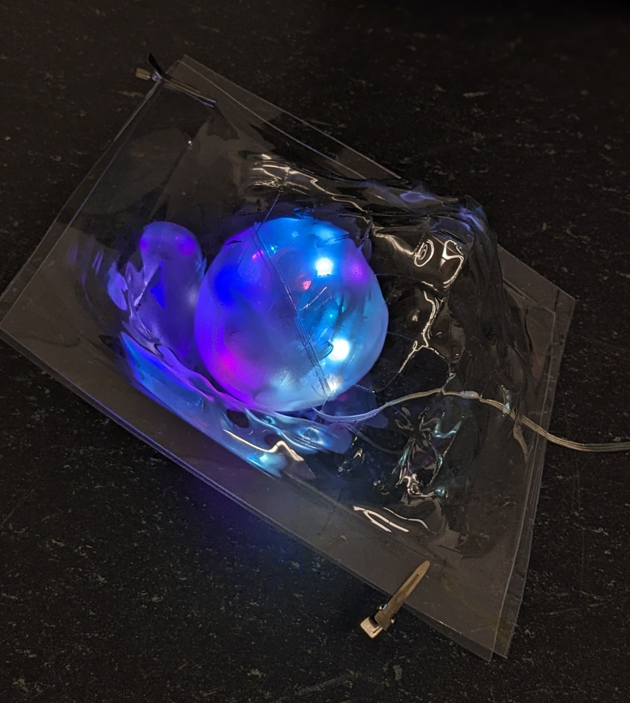
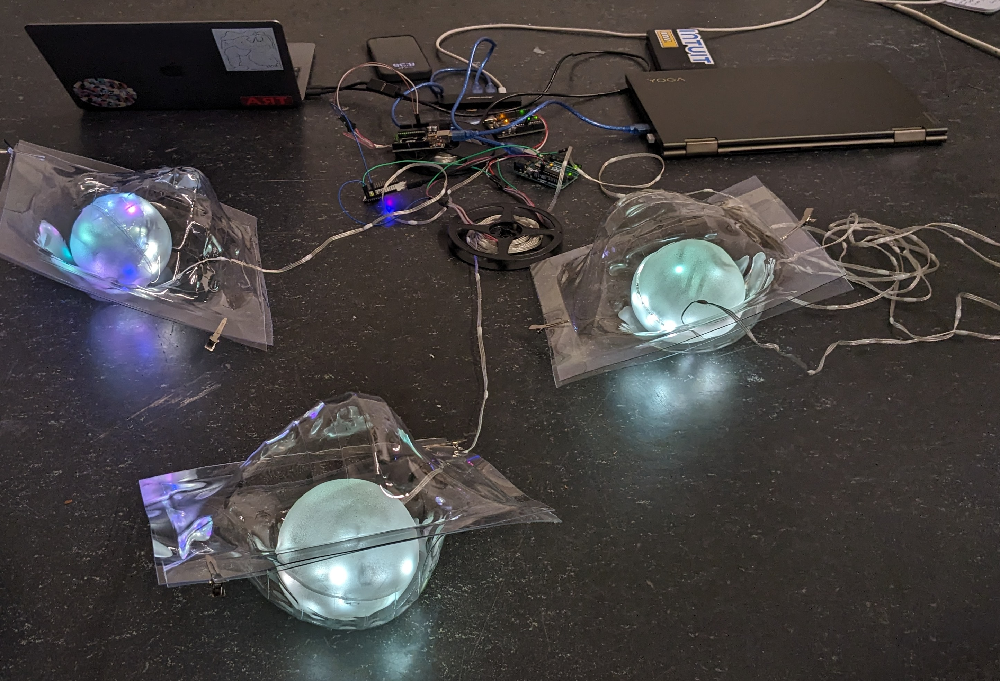
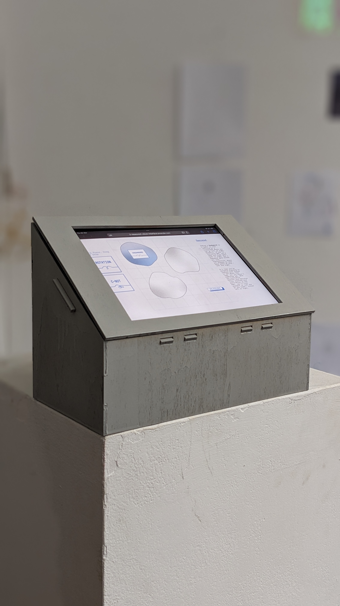